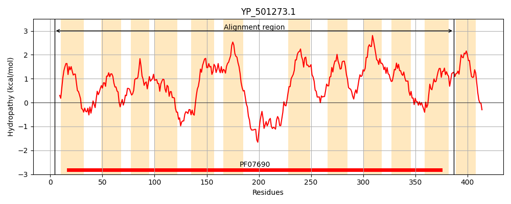
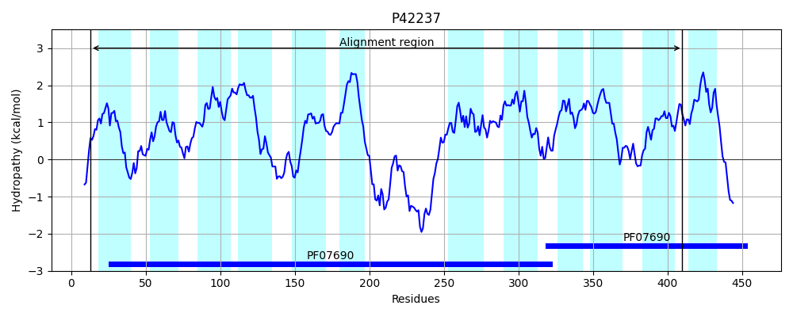
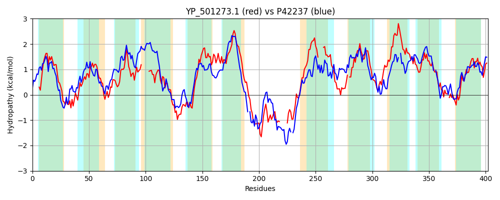

Hit Accession: P42237
Hit TCID: 2.A.1.14.1
Hit Description: gnl|BL_ORD_ID|10449 gnl|TC-DB|P42237|2.A.1.14.1 Probable glucarate transporter (D-glucarate permease) - Bacillus subtilis.
Mach Len: 402
e:0.000000
Query TMS Count : 12
Hit TMS Count: 12
TMS-Overlap Score: 8.550000
Predicted Substrates:CHEBI:14311;glucarate(2-)
BLAST Alignment:
Score: 495 , Bit scores: 195 bits, E-value: 1.4e-57, Alignment length: 402, Percentage identity: 31
Query: 4 KRTNVRWMFALAFFFIGVIAYMDRANISYIAKQMMDDLGMTKPQFGLLASFFSLGYALMQVPSGMLAEKFGPRKMITIALVWWSAFTILTGMIKNHG------LIYLVRFLFGVGEAPMYPSNAVFNSFWFSKNEKGRASSALLAGSYFGPVLAPIVTIAIVNAFNWQAVFYIFGAVGILMAVLWAIIAKDLPEQHRMVNEAEKRFIMENRDIVATEKS------SPPWNDFFKRFSFYAIAIQYFVVQFIIT----LFLIWLPTYLTEVFHVNFKEMS-ISSLPWLLMFFLILSAGAISDRVLGLGRSKFVARGVIAIAGFIVFAVSIIFAVRTGNLYVSIFWLSLGLGGIGISMGMSWAAATDLG-RNFSGTVSGWMNLWGNIGALISPLLAGLFVEHLG 387
K+T+VRW F + I Y DRA +S + DLG+ G + S F Y + Q+P G L ++FG + +I +++ +WS FT+L G I L++ +RFL G+ EAP +P N + WF +E+G AS+ + YF V+ + + ++F W +VF + G GIL+AV+W + P++H VNEAE +I + +++ + S W + K+ + I ++ Q+ IT FL W P YL + ++ E ++SLP L F + G +SD +L GRS AR V IAG ++ + S+I T + ++ + +SL G G + WA +D + +G G N +GNI ++ +P++ G V G
Sbjct: 13 KKTSVRWFIVFMLFLVTSINYADRATLSITGDSVQHDLGLDSVAMGYVFSAFGWAYVIGQLPGGWLLDRFGSKTIIALSIFFWSFFTLLQGAIGFFSAGTAIILLFALRFLVGLSEAPSFPGNGRVVASWFPSSERGTASAFFNSAQYFAIVIFSPLMGWLTHSFGWHSVFVVMGIAGILLAVIWLKTVYE-PKKHPKVNEAELAYIEQGGGLISMDDSKSKQETESKW-PYIKQLLTNRMLIGVYIAQYCITTLTYFFLTWFPVYLVQARGMSILEAGFVASLPALCGFAGGVLGGIVSDILLKKGRSLTFARKVPIIAGMLL-SCSMIVCNYTDSAWLVVVIMSLAFFGKGFG-ALGWAVVSDTSPKECAGLSGGLFNTFGNIASITTPIIIGYIVNATG 410 | Protein Hydropathy Plots: |
|---|
|  |  |
Pairwise Alignment-Hydropathy Plot:
|
|---|
|  |